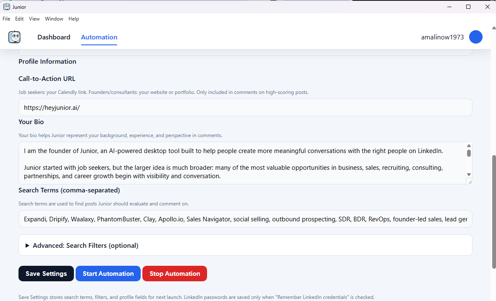

Your Profile and Search Settings
When you open Junior and click the Automation tab, you will see the screen below. This is where you tell Junior about yourself and what kind of posts to look for.

Here is what each field does:
- Call-to-Action URL This is a link Junior can include in your best comments. If you are a job seeker, paste your Calendly link so recruiters can book a call with you. If you are a founder or consultant, paste your website.
-
Your Bio
Write 2 to 3 sentences about who you are and what you do. Mention your role, your experience, and what kind of work you are looking for or offering. Junior reads this every time it writes a comment, so the more specific you are, the better the comment will sound.
Example: "I am a data engineer with 5 years of experience building pipelines with Python and AWS. I am looking for senior data engineering roles at mid-size companies." - Search Terms (comma-separated) These are the words Junior types into LinkedIn's search bar to find posts. Think like a recruiter. Instead of just "software engineer," use phrases like "hiring software engineer," "looking for a data analyst," or "join our team frontend developer." Separate each term with a comma. Use 5 to 10 terms for the best results.
- Advanced: Search Filters (optional) Click this to expand optional filters. You can narrow results by things like date range, author type, or keywords to exclude. You do not need to set this up right away. Come back to it once you have run Junior a few times and want to fine-tune your results.
- Save Settings / Start Automation / Stop Automation Click Save Settings to save everything you entered so it is there next time you open Junior. Click Start Automation to begin a run. Junior will open Chrome, log in to LinkedIn, search for posts using your search terms, and start writing and posting comments. Click Stop Automation to stop a run early.